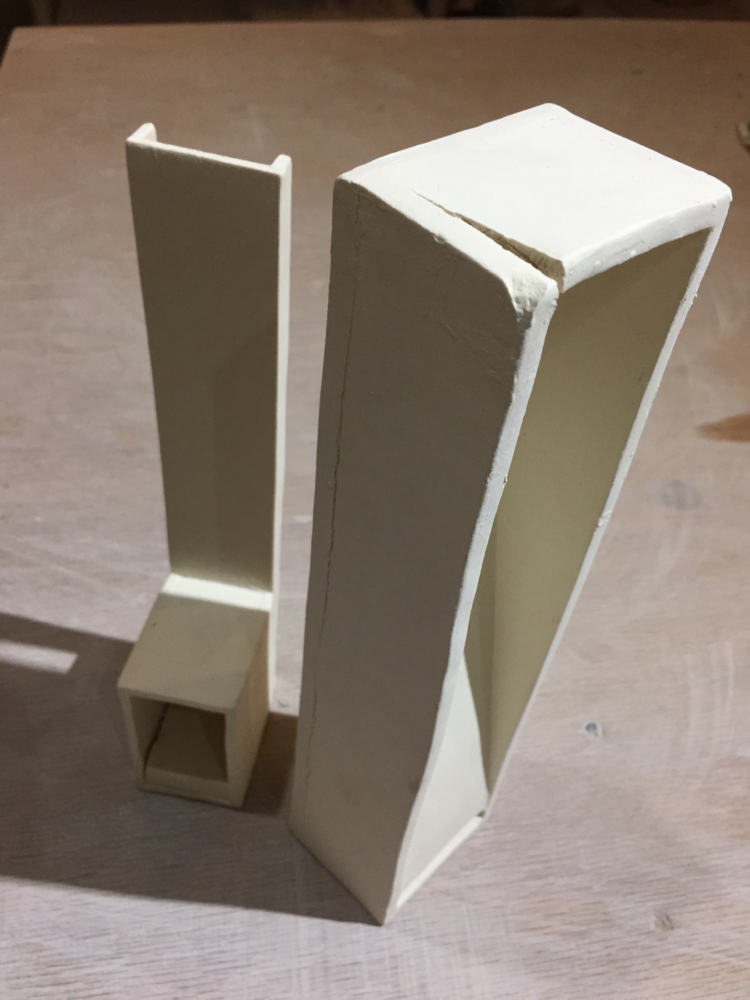
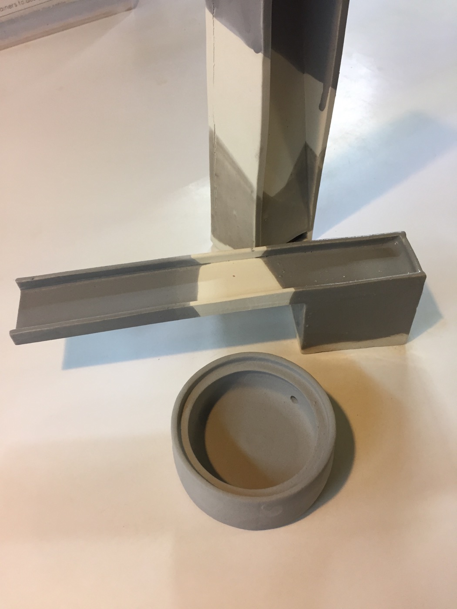

09.09.17
Made three versions of the extruded fountain with alterations to the top (hopefully to guide flow across and not over the edge).
09.06.17
Back at it with the extruded fountains. This test showed some promise but the pressure of the flow was too great and ended up spilling over the sides of the top.
09.05.17
Inspired by a bell-mouth spillway. The second version was built with a secondary slab to diffuse the pump's flow.
09.02.17
A very basic, self-contained sketch that ended up being recycled.
09.02.17
The search for a cable gland that was both liquid tight and small enough for a 3mm cable was resolved
here. Still interested in trying out a rubber grommet like this.
09.01.17
One of my favorite pieces to work on, but unfortunately the addition of water was extremely anticlimatic.
09.01.17
Second attempt at the weir fountain. Next time I plan on adding another slab to cover the holes and diffuse the water pressure. Planning on testing with neverwet on the V notch and reading more about weir construction.
08.20.17
Tiered fountain made with four wheel thrown parts. Still unglazed. Requires an excessive amount of water to run properly and work well as a desktop fountain. The scale seems better suited for outdoor use.
07.21.17
Thrown hollow torus top. Water pools in the center and spills over the sides into double walled basin.
07.18.17
Bisque accidentally fired at cone 6, causing the pieces to crack and absorb less glaze. Despite this, I decided to test the three grey glazes offered by the studio: transparent grey, dark, and light. (update: dark grey came out best)


07.17.17
Overly ambitious fountain made from nearly bone dry extrusions. Tried to repair cracking in the seams with vinegar and slip but I'm dubious it will work. A lesson learned when trying to join parts of varying dampness. (update: recycled)
07.16.17
The first model is based on a v notch weir used in flood control and measurement. The flow of water must pass through notch, simplifying flow volume calculations.
The second fountian is made of two mirror image extrusions joined together by hand. The base also includes a foot.
07.10.17
Testing 9-12V pump with two AA batteries and reed switch.
07.05.17
Second extruded fountain. Less warp, some cracking.
06.45.17
First extruded fountain.
06.22.17
Leaky test with heavy flow and random pieces.
04.21.17
Thrown fountain with tiny holes in bad places.